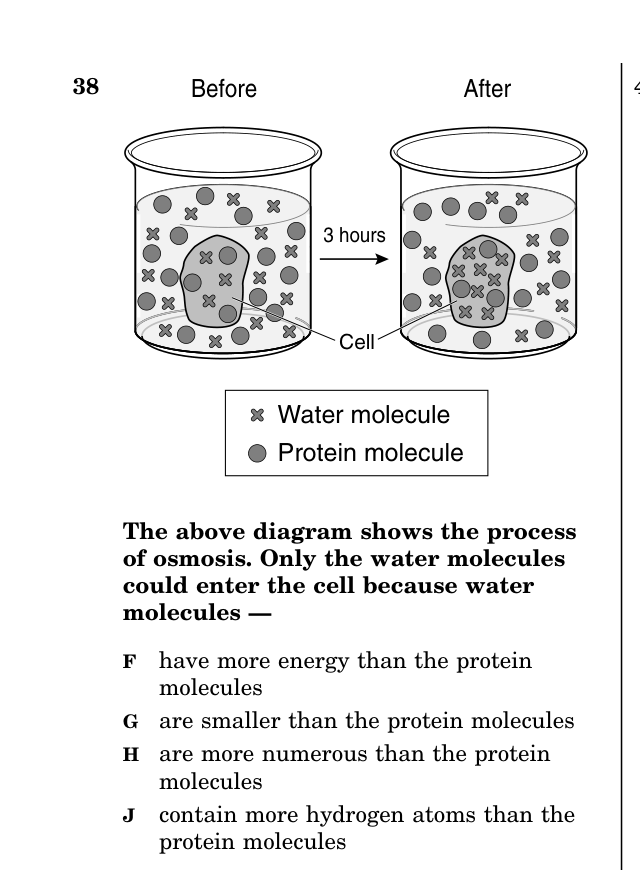

- Original 3 tenets of cell theory
- Expanded cell theory (metabolism, DNA, same composition)
- Differentiate hypothesis vs. theory vs. law
- NOT expected to know specific scientists' contributions
- Organelle functions individually and as a system
- Prokaryotic vs. eukaryotic cells
- Levels of organization: cells → tissues → organs → systems
- Maintaining homeostasis
- Stages of the cell cycle (interphase, mitosis, cytokinesis)
- Stages of mitosis (PMAT)
- DNA replication before division
- Result: two genetically identical cells
- Cell membrane composition (phospholipid bilayer, proteins)
- Passive: diffusion, osmosis, facilitated diffusion
- Active transport (requires energy)
- Compare energy needs for each type
- Unicellular vs. multicellular organisms
- Specialized cell types and their functions
- Form fits function (cell shape matches its job)
- Prokaryote vs. eukaryote structural differences
| Term | One-Line Definition |
|---|---|
| Cell Theory | All living things are made of cells; cells are the basic unit of life; cells come from existing cells |
| Prokaryote | Cell with NO membrane-bound nucleus or organelles (bacteria, archaea) |
| Eukaryote | Cell WITH a membrane-bound nucleus and organelles (plants, animals, fungi, protists) |
| Nucleus | The "control center" of the cell; contains DNA |
| Mitochondria | Powerhouse of the cell; performs cellular respiration to produce ATP |
| Chloroplast | Found in plant cells; performs photosynthesis using chlorophyll |
| Ribosome | Makes proteins; found in ALL cells (prokaryotes and eukaryotes) |
| Endoplasmic Reticulum | Transport network; rough ER has ribosomes, smooth ER makes lipids |
| Golgi Apparatus | Packages, modifies, and ships proteins out of the cell |
| Lysosome | Breaks down waste, old organelles, and foreign material |
| Vacuole | Storage sac; large central vacuole in plant cells stores water |
| Cell Wall | Rigid outer layer in plant, fungi, and bacteria cells; provides structure |
| Cell Membrane | Selectively permeable barrier around ALL cells; controls what enters/exits |
| Cell Cycle | The life cycle of a cell: growth (interphase) → division (mitosis + cytokinesis) |
| Interphase | Longest phase; cell grows, copies DNA, prepares to divide |
| Mitosis | Division of the nucleus into two identical nuclei (PMAT stages) |
| Cytokinesis | Division of the cytoplasm after mitosis; produces two separate cells |
| DNA Replication | Process of copying DNA before cell division so each new cell gets a complete copy |
| Diffusion | Movement of molecules from HIGH to LOW concentration; NO energy needed |
| Osmosis | Diffusion of WATER across a semipermeable membrane |
| Facilitated Diffusion | Passive transport using protein channels; NO energy needed |
| Active Transport | Movement against the concentration gradient; REQUIRES energy (ATP) |
| Homeostasis | Maintaining stable internal conditions despite external changes |
| Selectively Permeable | Membrane allows some substances through but blocks others |
| Hypotonic | Solution with less solute outside; water moves IN, cell swells |
| Hypertonic | Solution with more solute outside; water moves OUT, cell shrinks |
| Isotonic | Equal solute inside and outside; no net water movement |
| Endocytosis | Active transport INTO the cell; membrane wraps around substance |
| Exocytosis | Active transport OUT of the cell; vesicle dumps contents outside |
- A1–2 questions
- BAbout 6 questions
- CAbout 15 questions
- D25 questions
- AThe expanded cell theory (metabolism, DNA, same composition)
- BDrawing the structure of a mitochondrion
- CNaming all 20 amino acids
- DCalculating cell volume
Answer honestly — right or wrong, these help Mr. England see where you're starting.
- Aeukaryotic cells have a smaller cell nucleus
- Bprokaryotic cells are always much larger
- Cprokaryotic cells do not have a plasma membrane
- Deukaryotic cells have a more advanced cellular organization
- AThe Golgi apparatus
- BThe mitochondrion
- CThe nucleus
- DThe smooth endoplasmic reticulum
- Acholesterol
- Bproteins
- Clipids
- Dcarbohydrates
You probably learned these in middle school Life Science. They form the foundation of all biology:
| # | Original Cell Theory Tenet |
|---|---|
| 1 | All living things are made of one or more cells. |
| 2 | The cell is the basic unit of structure and function in all living things. |
| 3 | All cells come from pre-existing cells. (Cells do not arise spontaneously.) |
As science advanced, researchers discovered additional principles that apply to all cells. The VDOE framework specifically states that "in addition to the original three tenets, the current cell theory contains the following":
| # | Expanded Addition | What It Means |
|---|---|---|
| 4 | Metabolism occurs within cells. | All chemical reactions that sustain life (energy production, protein building, waste removal) happen INSIDE cells. Life processes are cellular processes. |
| 5 | Hereditary information (DNA) is passed from one cell to another. | When a cell divides, it copies its DNA and passes it to the new cells. This is how genetic information is transmitted across generations. |
| 6 | All cells have the same basic chemical composition. | Whether a cell is from a bacterium, a tree, or a human, it contains the same basic types of molecules: water, proteins, lipids, carbohydrates, and nucleic acids. |
The VDOE framework uses the cell theory as an example of how scientific knowledge grows over time. The original cell theory was proposed in the 1830s-1850s. Over the next 150+ years, scientists added to it as technology improved (better microscopes, DNA discovery, biochemistry). This demonstrates a key principle: scientific theories are not "guesses" — they are well-supported explanations that can be refined as new evidence emerges.
This distinction appears on BOTH BIO.1 and BIO.3. It is one of the most frequently tested Nature of Science concepts:
| Term | Definition | Example |
|---|---|---|
| Hypothesis | A testable prediction or explanation that has NOT yet been extensively tested. It's a starting point for investigation. | "If I add fertilizer to plant A but not plant B, then plant A will grow taller." |
| Theory | A well-tested explanation supported by a large body of evidence from many experiments. Theories EXPLAIN why something happens. | Cell theory, theory of evolution, germ theory of disease |
| Law | A statement that describes a pattern in nature that has been observed consistently. Laws describe WHAT happens, not why. | Law of gravity, laws of thermodynamics |
(2001-49) Which of these statements best summarizes the cell theory?
- AThey reproduce by mitosis.
- BThey are made up of many parts.
- CThey contain DNA.
- DThey need oxygen to survive.
- ACell wall
- BDNA
- CNucleus
- DMitochondria
| Kingdom | Metabolism | Control | Covering | Food Production |
|---|---|---|---|---|
| Fungi | mitochondria | nucleus | cell wall | none |
| Animalia | mitochondria | nucleus | cell membrane | none |
| Plantae | mitochondria | nucleus | cell wall | chloroplasts |
| Protista | mitochondria | nucleus | cell membrane | some with chloroplasts |
| Monera | ribosomes | DNA strand | cell wall | none |
- AAll cells have the same basic composition but differ in structure
- BCells can only come from other cells
- CAll organisms need oxygen
- DCells are too small to see without a microscope
- ATheories become laws once they are proven
- BLaws are more valid than theories
- CTheories are just educated guesses
- DTheories explain why; laws describe what happens — both are equally valid
All cells fall into one of two categories. Prokaryotic cells (bacteria and archaea) are small and simple — they have NO membrane-bound nucleus and NO membrane-bound organelles. Their DNA floats freely in the cytoplasm in a region called the nucleoid. Eukaryotic cells (plants, animals, fungi, protists) are larger and more complex — they have a TRUE nucleus surrounded by a nuclear membrane, plus many membrane-bound organelles that compartmentalize cell functions.
| Feature | Prokaryotic | Eukaryotic |
|---|---|---|
| Nucleus | No membrane-bound nucleus | True nucleus with nuclear membrane |
| Organelles | No membrane-bound organelles | Mitochondria, ER, Golgi, etc. |
| DNA | Circular, in cytoplasm | Linear chromosomes, in nucleus |
| Ribosomes | Yes (smaller) | Yes (larger) |
| Cell membrane | Yes | Yes |
| Cell wall | Most have one | Plants and fungi have one; animals don't |
| Size | 1–10 μm | 10–100 μm |
| Examples | Bacteria, archaea | Plants, animals, fungi, protists |
The key SOL fact: ribosomes are found in ALL cells — both prokaryotic and eukaryotic. They are the one organelle that every living cell shares, because every cell needs to make proteins.
Think of a eukaryotic cell as a factory. Each organelle is a department that performs a specific job. Together, they keep the cell alive.
| Organelle | Function | Analogy |
|---|---|---|
| Nucleus | Contains DNA; controls all cell activities | The boss's office / control room |
| Ribosome | Makes proteins (translation) | The assembly line workers |
| Rough ER | Studded with ribosomes; makes and transports proteins | The assembly line conveyor belt |
| Smooth ER | Makes lipids; detoxifies chemicals | The chemical processing department |
| Golgi Apparatus | Packages, modifies, and ships proteins | The shipping and packaging department |
| Mitochondria | Cellular respiration; produces ATP | The power plant |
| Chloroplast | Photosynthesis (PLANTS ONLY) | Solar panels |
| Lysosome | Digests waste and old cell parts | The recycling center / cleanup crew |
| Vacuole | Storage (water, nutrients, waste); very large in plant cells | The warehouse |
| Cell Membrane | Controls what enters and exits the cell; selectively permeable | Security gate / front door |
| Cell Wall | Rigid outer support (plants, fungi, bacteria only) | The outer wall of a building |
| Cytoplasm | Gel-like fluid that fills the cell; holds organelles in place | The floor / workspace |
The VDOE framework emphasizes that organelles don't work in isolation — they function as an integrated system. For example, the process of making and exporting a protein involves multiple organelles working together:
DNA in the nucleus → mRNA carries instructions to ribosomes on the rough ER → protein is folded and transported through the ER → protein is packaged and modified by the Golgi apparatus → protein is shipped to its destination (inside or outside the cell) via vesicles that merge with the cell membrane.
In multicellular organisms, cells are organized into a hierarchy:
Cells → Tissues → Organs → Organ Systems → Organism
| Level | Definition | Example |
|---|---|---|
| Cell | Basic unit of life | A muscle cell |
| Tissue | Group of similar cells working together | Muscle tissue (many muscle cells) |
| Organ | Two or more tissues working together | The heart (muscle, nerve, and connective tissue) |
| Organ System | Group of organs working together | Circulatory system (heart, blood vessels, blood) |
| Organism | Complete individual living thing | A human being |
The VDOE framework emphasizes that cells and organisms must maintain homeostasis — stable internal conditions — despite changes in the external environment. This requires coordinated work among organelles, cells, tissues, and organ systems.
Here are specific examples the SOL may test:
| Homeostasis Example | What Happens | Cell/System Involved |
|---|---|---|
| Heart rate during exercise | Muscles need more O₂ and ATP → heart beats faster to deliver more oxygenated blood → returns to resting rate when exercise stops | Cardiac muscle cells, nervous system |
| Stomata response | Guard cells open stomata when the plant needs CO₂ for photosynthesis; close stomata when the plant is losing too much water (dry/hot conditions) | Guard cells in leaf epidermis |
| Root development | Roots grow toward water sources; more root hairs develop in dry soil to increase surface area for water absorption | Root hair cells |
| Blood glucose regulation | After eating, blood glucose rises → pancreas releases insulin → cells absorb glucose → blood glucose returns to normal range | Pancreatic cells, liver cells |
| Body temperature | Too hot → sweat glands activate (evaporative cooling), blood vessels dilate. Too cold → shivering produces heat, blood vessels constrict | Skin cells, muscle cells |
The key concept: homeostasis involves detecting a change, responding to correct it, and returning to normal. This is called a feedback loop. On the SOL, if a question describes an organism responding to a change to maintain stable conditions, the answer is homeostasis.
- AEnzymes
- BDNA
- CLysosomes
- DRibosomes
- Agolgi bodies
- Bmitochondria
- Ccell membranes
- Dchloroplasts
- AEndoplasmic reticulum
- BRibosome
- CGolgi body
- DNucleus
- ACentrioles
- BGolgi bodies
- CLysosomes
- DMitochondria
- AChloroplasts and cell walls
- BCytoplasm and mitochondria
- CRibosomes and cell membranes
- DNuclei and centrioles
- Ahomeostasis
- Bfermentation
- Cexcretion
- Dglycolysis
The cell cycle is the life cycle of a cell from the time it's formed until it divides into two new cells. It has two main phases:
| Phase | What Happens | % of Cell Cycle |
|---|---|---|
| Interphase | Cell grows, carries out normal functions, and copies its DNA | ~90% |
| M Phase (Mitosis + Cytokinesis) | Nucleus divides (mitosis), then cytoplasm divides (cytokinesis) | ~10% |
Interphase is the LONGEST phase. The cell spends most of its life in interphase, growing and performing its normal functions. During interphase, the cell also replicates (copies) its DNA so that when it divides, each new cell gets a complete set of genetic instructions.
DNA replication occurs during interphase, BEFORE mitosis begins. Here's how it works: enzymes unwind and "unzip" the double helix by breaking the hydrogen bonds between base pairs. Each original strand serves as a template. Free nucleotides in the nucleus bond to the exposed bases following the base-pairing rules (A-T, C-G), forming a new complementary strand alongside each original strand. The result: two identical copies of the DNA, each consisting of one original strand and one new strand.
Why is this critical? Because when the cell divides, each new daughter cell needs a COMPLETE copy of all the organism's DNA. Without replication, daughter cells would only get half the genetic information — which would be lethal.
Mitosis is the division of the nucleus into two genetically IDENTICAL nuclei. It occurs in four stages, remembered by the acronym PMAT:
| Stage | What Happens | Key Visual |
|---|---|---|
| Prophase | Chromatin condenses into visible chromosomes; nuclear membrane begins to break down; spindle fibers form | Chromosomes become visible; nucleus starts dissolving |
| Metaphase | Chromosomes line up in the MIDDLE of the cell; spindle fibers attach to centromeres | Chromosomes in a line across the center |
| Anaphase | Sister chromatids are pulled APART to opposite poles of the cell | Chromosomes being pulled in opposite directions |
| Telophase | Nuclear membranes re-form around each set of chromosomes; chromosomes uncoil; spindle disappears | Two nuclei forming at opposite ends |
After mitosis divides the nucleus, cytokinesis divides the cytoplasm, producing two separate daughter cells. In animal cells, the cell membrane pinches inward (like tightening a belt) to split the cell in two. In plant cells, a cell plate forms down the middle and eventually becomes a new cell wall separating the two cells.
The end result of mitosis + cytokinesis: two genetically IDENTICAL daughter cells, each with the same number of chromosomes as the original parent cell.
Cells divide for three main reasons: growth (adding new cells to a growing organism), repair (replacing damaged or dead cells), and development (creating specialized cell types during embryonic development). A single-celled organism divides to reproduce.
(2004-30) The process of DNA replication is necessary before a cell —
- AProphase
- BTelophase
- CMetaphase
- DAnaphase
- Acodes for RNA molecules
- Bmodifies lysosome enzymes
- Cdivides into two cells
- Dmakes a protein
- A6 chromosomes
- B12 chromosomes
- C24 chromosomes
- D18 chromosomes
- Achromosomes
- Boffspring
- Cgametes
- Dbody cells
The cell membrane (also called the plasma membrane) surrounds EVERY cell. It is made primarily of a phospholipid bilayer — two layers of phospholipid molecules arranged with their hydrophilic (water-loving) heads facing outward and their hydrophobic (water-fearing) tails facing inward. Embedded in this bilayer are various proteins that serve as channels, pumps, receptors, and identification markers.
The membrane is selectively permeable (also called semipermeable) — it allows some substances to pass through while blocking others. Small, nonpolar molecules (like O₂ and CO₂) can slip through the lipid bilayer easily. Large molecules, charged ions, and polar molecules generally need help from transport proteins to cross.
The VDOE framework states: "The life processes of a cell are maintained by the plasma membrane, which is comprised of a variety of organic molecules. The membrane controls the movement of material in and out of the cell, communication between cells, and the recognition of cells."
Passive transport moves substances from an area of HIGH concentration to LOW concentration (down the concentration gradient). It requires NO energy (no ATP) from the cell — substances simply move toward equilibrium on their own.
| Type | What Moves | How It Works | Example |
|---|---|---|---|
| Diffusion | Any small molecule | Molecules move from high to low concentration until evenly distributed | Perfume spreading across a room; O₂ entering cells |
| Osmosis | WATER only | Water moves across a semipermeable membrane from high water concentration to low water concentration | Water entering a cell in a hypotonic solution |
| Facilitated Diffusion | Large or charged molecules | Molecules pass through protein channels in the membrane (still high to low — no energy) | Glucose entering a cell through a protein channel |
Active transport moves substances from an area of LOW concentration to HIGH concentration (against the concentration gradient). This is like pushing a ball uphill — it requires energy in the form of ATP. The cell uses transport proteins (pumps) to force molecules in the direction they wouldn't naturally go.
Two special types of active transport involve the cell membrane itself:
| Type | Direction | How It Works |
|---|---|---|
| Endocytosis | INTO the cell | Cell membrane wraps around a substance and brings it inside in a vesicle |
| Exocytosis | OUT of the cell | A vesicle inside the cell fuses with the membrane and dumps its contents outside |
Real-world examples: A white blood cell engulfing a bacterium is endocytosis (the membrane wraps around the pathogen and pulls it inside to be digested by lysosomes). A nerve cell releasing neurotransmitters into the synapse is exocytosis (vesicles filled with signaling molecules fuse with the membrane and dump their contents outside). Paramecium taking in food through its oral groove is also endocytosis — the food ends up in a food vacuole.
The cell membrane doesn't just control what enters and exits — it also plays a critical role in cell communication and cell recognition. Receptor proteins on the membrane surface detect chemical signals (hormones, neurotransmitters) from other cells. Marker proteins (glycoproteins) on the surface act as identification tags, allowing the immune system to distinguish "self" cells from foreign invaders. This is why organ transplant recipients must take immunosuppressant drugs — the recipient's immune system recognizes the donor cells as "foreign" based on their surface markers.
| Feature | Diffusion | Osmosis | Facilitated Diffusion | Active Transport |
|---|---|---|---|---|
| Energy? | No | No | No | YES (ATP) |
| Direction | High → Low | High → Low (water) | High → Low | Low → High |
| Protein needed? | No | No (aquaporins help) | Yes (channel protein) | Yes (pump protein) |
| Type | Passive | Passive | Passive | Active |
(2002-26) Unicellular organisms cannot grow very large because the —
- Adiffusion of nutrients into the cell's interior would be too slow
- Blocomotion of the organisms would be too slow
- Crespiratory rate would be too high
- Denergy expenditures would be too great

- Ahave more energy than the protein molecules
- Bare smaller than the protein molecules
- Ccontain more hydrogen atoms than the protein molecules
- Dare more numerous than the protein molecules
- ANucleus
- BLysosomes
- CCell membrane
- DEndoplasmic reticulum
- ADiffusion
- BOsmosis
- CFacilitated diffusion
- DActive transport
- Alose water in both solutions
- Bgain water in the distilled water and lose water in the salty water
- Cgain water in both solutions
- Dlose water in the distilled water and gain water in the salty water
- Agrow toward the sun
- Blose water and wilt
- Cgain water and become rigid
- Dincrease its rate of photosynthesis
A unicellular organism consists of a single cell that must carry out ALL life processes by itself — obtaining nutrients, producing energy, removing waste, growing, and reproducing. Examples include bacteria, many protists (like paramecium and amoeba), and some fungi (yeast).
A multicellular organism is made of many cells that are specialized to perform specific functions. No single cell does everything — instead, there is a division of labor among different cell types. This specialization allows multicellular organisms to be much larger and more complex than unicellular ones.
| Feature | Unicellular | Multicellular |
|---|---|---|
| Cell count | One cell = entire organism | Many cells, organized into tissues/organs |
| Specialization | No — one cell does everything | Yes — different cells for different jobs |
| Size | Microscopic | Can be very large (whales, trees) |
| Complexity | Simple | Complex (organ systems) |
| Examples | Bacteria, amoeba, paramecium, yeast | Plants, animals, fungi, most algae |
In multicellular organisms, cells have specific shapes that match their specific jobs. The VDOE framework states: "Each specialized cell type has a specific structure that helps it perform a specific function." Here are key examples:
| Cell Type | Shape/Structure | Function | Why Shape Matches Job |
|---|---|---|---|
| Red Blood Cell | Flat, biconcave disc; no nucleus | Carries oxygen | Large surface area for gas exchange; no nucleus = more room for hemoglobin |
| Nerve Cell (Neuron) | Long, branched extensions (axon + dendrites) | Transmits electrical signals | Long shape allows signal transmission over distances; branches connect to many cells |
| Muscle Cell | Long, cylindrical, contains contractile fibers | Contraction and movement | Fibers can shorten (contract) to produce force; many mitochondria for ATP |
| Root Hair Cell | Long, thin extension from root surface | Absorbs water and minerals from soil | Thin extension increases surface area for maximum absorption |
| Guard Cell | Bean-shaped pair around stomata in leaves | Controls gas exchange | Shape allows opening/closing of stomata to regulate CO₂ and H₂O exchange |
| White Blood Cell | Irregular, can change shape | Fights infection | Flexible shape allows it to squeeze through blood vessel walls and engulf pathogens |
Different cell types have different numbers and types of organelles depending on their function:
- Muscle cells have many mitochondria (need lots of ATP for contraction)
- Cells that make proteins for export (like pancreas cells making insulin) have lots of rough ER and Golgi apparatus
- Cells with many ribosomes are specialized for protein synthesis
- Plant leaf cells have many chloroplasts (for photosynthesis)
- White blood cells have many lysosomes (to digest engulfed pathogens)
(2006-24) Which of these organisms contains no specialized cells?
- ASea anemone
- BJellyfish
- CParamecium
- DSponge
- Acell division
- Benergy production
- Cprotein synthesis
- Denzyme storage
- AChloroplasts
- BRibosomes
- CVacuoles
- DFlagella
- AChloroplast
- BMitochondrion
- CVacuole
- DNucleus
You must flip ALL 24 flashcards before the quiz appears. Then score at least 8/10 on the quiz to unlock the Practice Test.
Print this page for quick reference.
| Tenet | Statement |
|---|---|
| Original 1 | All living things are made of cells |
| Original 2 | Cell is the basic unit of structure and function |
| Original 3 | All cells come from existing cells |
| Expanded 4 | Metabolism occurs within cells |
| Expanded 5 | DNA is passed from cell to cell |
| Expanded 6 | All cells have the same basic chemical composition |
Hypothesis = testable prediction. Theory = well-tested explanation (WHY). Law = describes pattern (WHAT). Both equal in validity.
| Organelle | Function | Found In |
|---|---|---|
| Nucleus | Control center; contains DNA | Eukaryotes only |
| Ribosome | Makes proteins | ALL cells |
| Mitochondria | ATP production (respiration) | Eukaryotes |
| Chloroplast | Photosynthesis | Plants only |
| Rough ER | Protein transport (has ribosomes) | Eukaryotes |
| Golgi | Packages & ships proteins | Eukaryotes |
| Lysosome | Digests waste | Animal cells |
| Vacuole | Storage (large in plants) | Both |
Plant only: cell wall, chloroplasts, large central vacuole. Prokaryotes: no membrane-bound organelles, but have ribosomes + cell membrane.
Interphase (~90%): cell grows + copies DNA. Mitosis (PMAT): Prophase → Metaphase (middle) → Anaphase (apart) → Telophase. Cytokinesis: splits cytoplasm. Result: 2 identical cells. DNA replication happens BEFORE division.
| Type | Energy? | Direction |
|---|---|---|
| Diffusion | No (passive) | High → Low |
| Osmosis | No (passive) | Water: High → Low |
| Facilitated diffusion | No (passive, uses protein channels) | High → Low |
| Active transport | YES (ATP) | Low → High |
| Endocytosis | YES (active) | Into cell (membrane wraps around substance) |
| Exocytosis | YES (active) | Out of cell (vesicle fuses with membrane) |
Osmosis solutions: Hypotonic (less solute outside) = water IN, cell swells. Hypertonic (more solute outside) = water OUT, cell shrinks. Isotonic (equal) = no net change. Water always moves toward MORE solute.
Membrane also: receptor proteins detect signals (cell communication); marker proteins identify cells (cell recognition); transport proteins move large molecules.
Detecting change → responding → returning to normal. Examples: heart rate up during exercise then returns; stomata close in dry conditions; blood glucose regulated by insulin/glucagon; sweating cools the body.
Form fits function: muscle cells have many mitochondria; RBCs have no nucleus for more hemoglobin; nerve cells are long for signal transmission. Cells → Tissues → Organs → Organ Systems → Organism.
BIO.3 Practice Test
Released Virginia SOL questions —
- Aeukaryotic cells have a smaller cell nucleus
- Bprokaryotic cells are always much larger
- Cprokaryotic cells do not have a plasma membrane
- Deukaryotic cells have a more advanced cellular organization
- AProkaryotes are made of cells
- BProkaryotes do not have chromosomes
- CProkaryotes have DNA
- DProkaryotic cells do not have membrane-bound organelles
- AThey reproduce by mitosis
- BThey are made up of many parts
- CThey contain DNA
- DThey need oxygen to survive
- AEnzymes
- BDNA
- CLysosomes
- DRibosomes
- AThe Golgi apparatus
- BThe mitochondrion
- CThe nucleus
- DThe smooth endoplasmic reticulum
- ANucleus
- BEndoplasmic reticulum
- CGolgi apparatus
- DMitochondrion
- AEndoplasmic reticulum
- BRibosome
- CGolgi body
- DNucleus
- AChloroplasts and cell walls
- BCytoplasm and mitochondria
- CRibosomes and cell membranes
- DNuclei and centrioles
- AProphase
- BTelophase
- CMetaphase
- DAnaphase
- Acodes for RNA molecules
- Bmodifies lysosome enzymes
- Cdivides into two cells
- Dmakes a protein
- Astores its genetic information in DNA
- Bhas ribosomes to make proteins
- Chas no membrane-bound nucleus
- Dhas a cell membrane
- Acholesterol
- Bproteins
- Clipids
- Dcarbohydrates
- Adiffusion of nutrients would be too slow
- Blocomotion would be too slow
- Crespiratory rate would be too high
- Denergy expenditures would be too great
- ANucleus
- BLysosomes
- CCell membrane
- DEndoplasmic reticulum
- Alose water in both solutions
- Bgain water in distilled water and lose water in salty water
- Cgain water in both solutions
- Dlose water in distilled water and gain water in salty water
- ASea anemone
- BJellyfish
- CParamecium
- DSponge
- Agolgi bodies
- Bchloroplasts
- Ccell membranes
- Dmitochondria
- Acell division
- Benergy production
- Cprotein synthesis
- Denzyme storage
- AMovement
- BCatching prey
- CCirculation
- DAttachment
- ACentrioles
- BGolgi bodies
- CLysosomes
- DMitochondria
⏳ Complete the Practice Test to see your results.